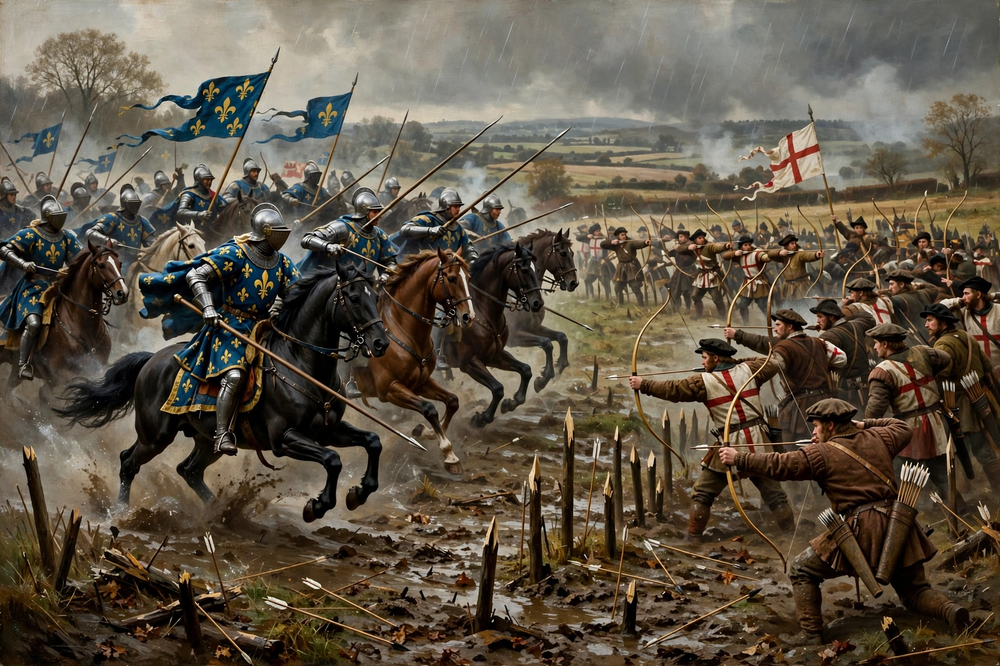

The Battle of Patay (18 June 1429) was a decisive French victory in the Loire Campaign of the Hundred Years' War, fought a month after Joan of Arc relieved Orléans. An English army under John Talbot and Sir John Fastolf was caught before it could deploy its longbowmen and was destroyed by a French vanguard charge — a rare inversion of the usual pattern of the war, sometimes called the "Agincourt in reverse".
 | |
| Date | 18 June 1429 |
|---|---|
| Location | Patay, Loiret, France |
| Result | Decisive French victory |
| Belligerents | Kingdom of France vs. Kingdom of England |
| Commanders | La Hire, Jean Poton de Xaintrailles, Joan of Arc (with the main body); John Talbot (captured), John Fastolf |
After Orléans, the French rapidly retook the Loire strongholds of Jargeau, Meung-sur-Loire and Beaugency. An English relief force from Paris under Fastolf, joined by Talbot's garrisons, advanced to meet them and fell back towards Patay when Beaugency surrendered.
French scouts spotted the English when a stag blundered into their hidden position, prompting a shout that gave them away. Before the archers could plant their defensive stakes, the French vanguard of some 1,500 men-at-arms under La Hire and Xaintrailles charged. The English army collapsed: perhaps 2,000–2,500 were killed and Talbot was captured, while Fastolf escaped with a remnant — an escape that led to his temporary disgrace and suspension from the Order of the Garter (and, later, to his literary afterlife as Shakespeare's Falstaff). French losses were negligible, around a hundred men.
Patay annihilated England's field army in the Loire and cleared the way for the march to Reims, where Charles VII was crowned on 17 July 1429. Coming on the feast of the victory, the battle is remembered in France alongside Orléans as the turning point of the war.
From Wikipedia, the free encyclopedia.